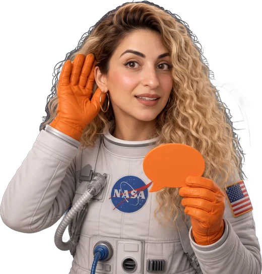
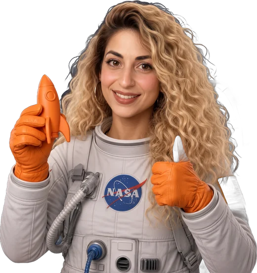
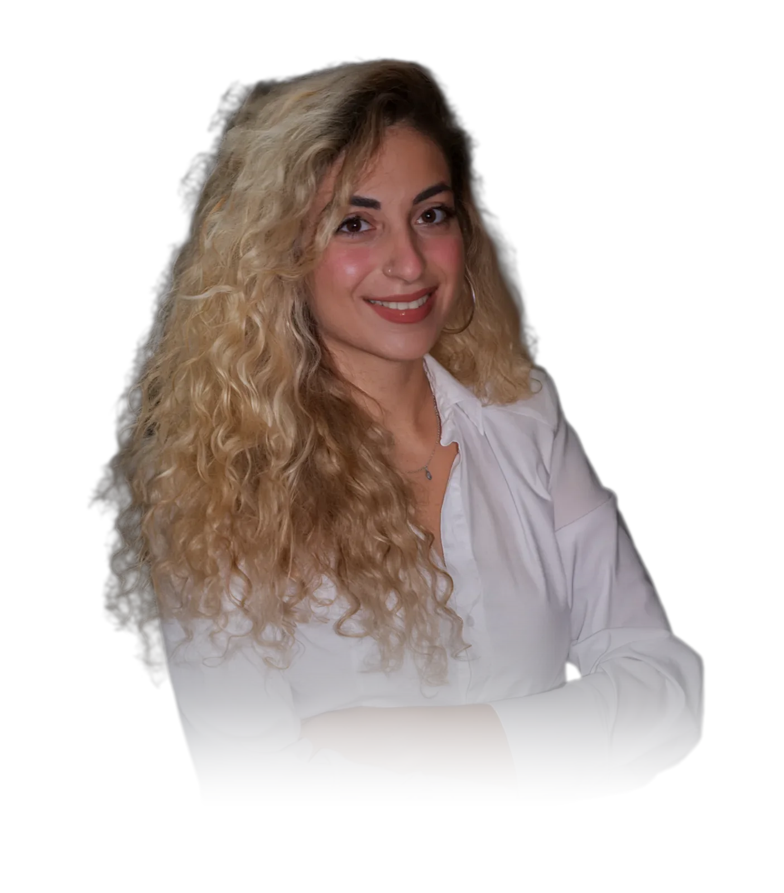

ההחלטה נופלת באתר.
השיחה רק סוגרת אותה
אתרי תדמית ודפי נחיתה לעסקים • עיצוב שמביא תוצאות עסקיות • אתר שנראה מקצועי כמו העסק שלכם
אתרים שעושים את ההחלטה
אתר שעושה את העבודה לפני השיחה
אתר שנראה ברמה של העסק שלכם
כשלקוח נכנס לאתר, הוא צריך להבין מיד שמדובר בעסק רציני. אתר שנראה טוב ועדכני נותן לו ביטחון לפנות אליכם ולא למתחרים.

מסרים מדויקים ללקוח שלכם
מתחילים בשיחה, כדי להבין מה גורם ללקוח שלכם להתלבט ומה מעכב אותו. ואז בונים את הדף כך שכל שאלה והתנגדות שלו מקבלת תשובה, עוד לפני שהוא פונה אליכם.
עבודה מול אדם אחד בלבד
את כל העבודה אני עושה בעצמי: האפיון, העיצוב, הטקסטים והבנייה. אתם מדברים איתי ישירות, בלי מתווכים, ומה שסיכמנו הוא מה שתקבלו.

ליווי גם אחרי שהאתר באוויר
צריך לעדכן מחיר, להוסיף שירות או דף חדש? אני זמינה, מכירה את האתר ואת העסק, והשינוי נעשה מהר.


נעים מאוד, אני רוני
מי שמשווה בין עסקים רואה אתרים שנראים אותו דבר. בסוף הוא בוחר במי שהסביר לו הכי טוב.מי שמשווה בין עסקים רואה אתרים שנראים אותו דבר. בסוף הוא בוחר במי שהסביר לו הכי טוב.
לכן אני בונה אתרים שמספרים את הסיפור שלכם. כשהגולש חווה את העסק, הוא מגיע לשיחה כבר בטוח.לכן אני בונה אתרים חיים, שמספרים את הסיפור שלכם תוך כדי גלילה. כשהגולש חווה את העסק, הוא מגיע לשיחה כבר בטוח.
לשיחת היכרותהעבירו את העכבר עליי ותגרמו לי לחייךגללו לאט ותגרמו לי לחייך
איך עובדים יחד
קודם מקשיבים
מדברים על העסק, על הלקוחות שאתם רוצים להביא ועל מה שגורם להם להתלבט לפני שהם פונים. בסוף השיחה יש לכם רעיון ראשון והצעת מחיר.
מכוונים את המסר
אני ממפה את השאלות וההתנגדויות של הלקוחות שלכם, וכותבת את הטקסטים של הדף סביבן. ככה כל סקשן עונה על משהו שהגולש באמת שואל.
רואים איך האתר ייראה.
קודם מחליטים מה הגולש צריך להרגיש. אחר כך מפתחים את העיצוב סביב התחושה הזאת, ומדייקים עד שהוא מזוהה עם המותג שלכם מהשנייה הראשונה.
האתר מתעורר לחיים
כאן העיצוב מתחיל לזוז. כל תנועה, כפתור וטופס נבנים כדי להוביל את הגולש צעד אחד קדימה.
ממריאים.
מחברים דומיין, בודקים שהכול עובד ומעלים. ואחרי ההשקה, כשצריך לעדכן מחיר או להוסיף שירות, אני כאן.
עם מה אתם צריכים עזרה?
מה המטרה העיקרית שלכם?
מעולה, בואו נשים פרטים
זה הכל. אחזור אליכם באופן אישי בוואטסאפ לגבי הפרויקט שלכם.
תודה!
תודה שהשארת פרטים. אחזור אליך באופן אישי בוואטסאפ בקרוב.